Slide 01Scale
Apache Spark: Powering Massive Data Systems
Spark is introduced as a distributed data engine that breaks large workloads into parallel tasks across many machines.
This gallery turns core Spark ideas into a structured visual journey: why distributed computing matters, how PySpark expresses work, and how Spark executes, partitions, shuffles, joins, caches, and optimizes data pipelines at scale.
Each frame focuses on one concept and explains what the learner should understand before moving to the next Spark topic.
Spark is introduced as a distributed data engine that breaks large workloads into parallel tasks across many machines.
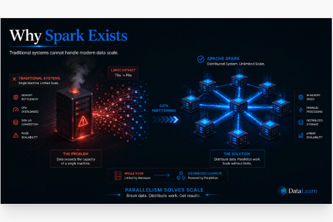
Modern datasets exceed the limits of a single machine, so Spark distributes storage, compute, and execution pressure.
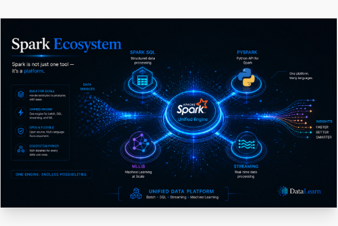
Spark is more than a processing engine; it is a unified platform for SQL, Python, streaming, and machine learning workloads.
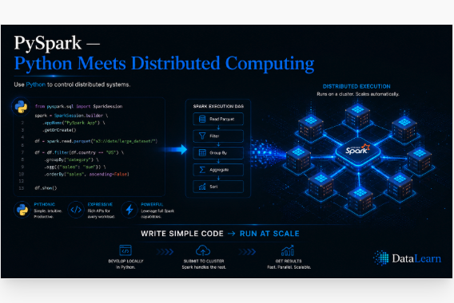
PySpark lets learners write familiar Python code while Spark translates that intent into distributed execution plans.
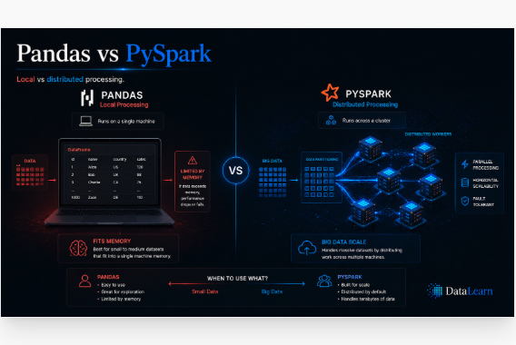
Pandas is ideal for local, memory-bound analysis; PySpark is built for partitioned data and parallel work across a cluster.
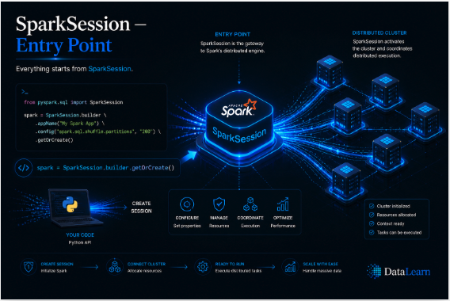
The SparkSession acts as the main gateway into Spark, connecting user code with DataFrames, SQL, catalogs, and execution.
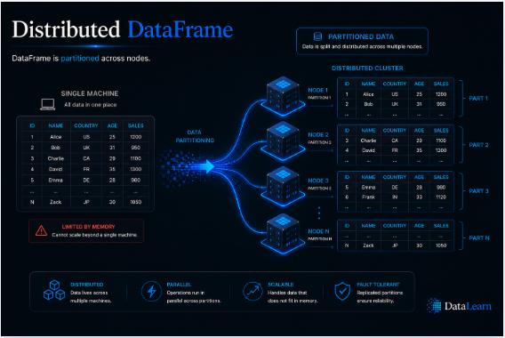
A Spark DataFrame looks logical and tabular to the user, but physically it is split into partitions across cluster nodes.
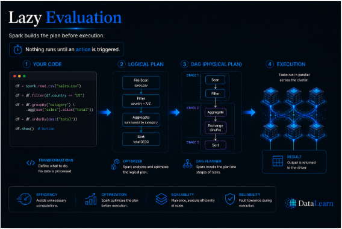
Spark records transformations first and delays execution until an action is called, giving the optimizer time to improve the plan.
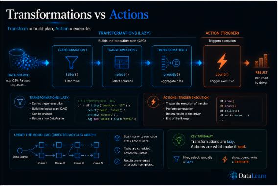
Transformations define a new dataset, while actions trigger computation and return results, files, or materialized outputs.
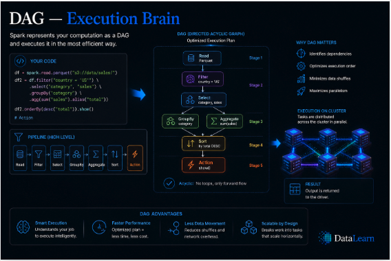
Spark converts chained operations into a directed acyclic graph, then breaks that graph into stages and tasks.
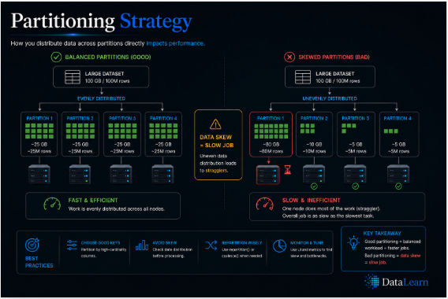
Good partitioning balances work across the cluster; poor partitioning creates skew, idle executors, and slow pipelines.
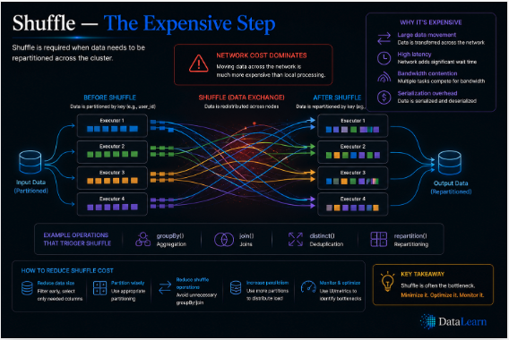
Shuffle moves data across the network so related records can meet, making it one of Spark's most expensive operations.
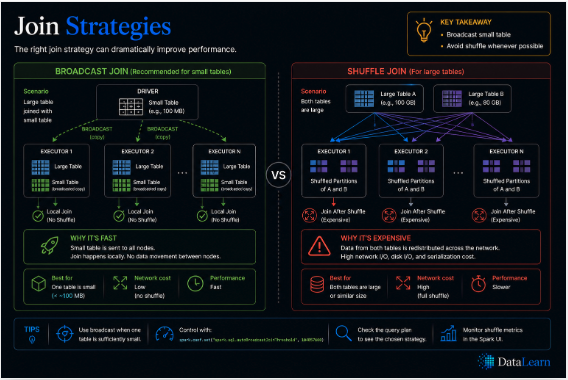
Broadcast joins reduce movement when one table is small, while shuffle joins are necessary when both sides are large.
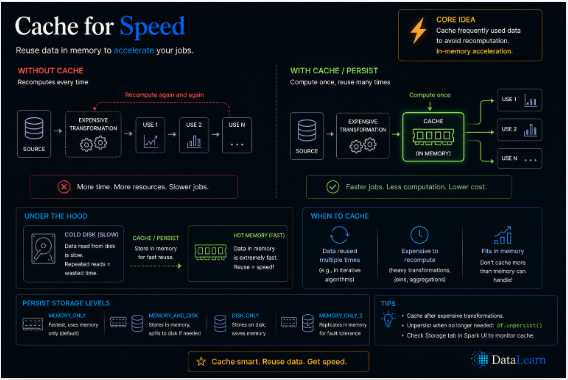
Caching keeps reused data close to the executors, avoiding repeated scans and accelerating iterative analysis.
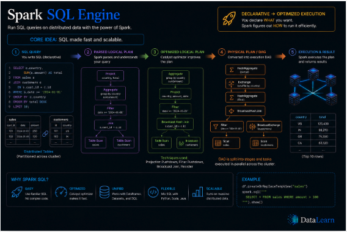
Spark SQL turns declarative queries into analyzed, optimized, and executable plans for the distributed runtime.
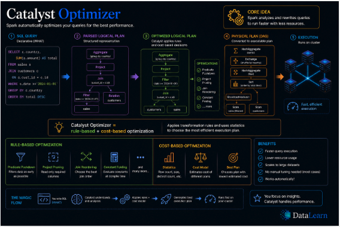
Catalyst rewrites and improves query plans through analysis, logical optimization, physical planning, and code generation.
Use this page as a visual index for a Spark learning module. The sequence moves from big-picture intuition into execution mechanics, so learners can connect architecture, code, and performance behavior.